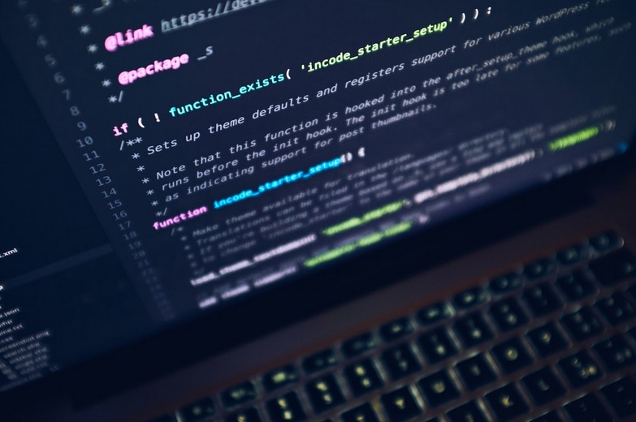

This section is a little technical. The resources linked below are designed to help artists build, update and host their websites for free while we finish preparing the full version of Studio Art Pages for launch. The resources on this page are more difficult to use than the Studio Art Pages platform will be, but should be simple to use for artists who are comfortable working with very basic HTML and CSS. Below are links to download website template files, along with instructions for how to implement them and host them for free on github, which is a professional resource used by web developers.
some basic code used in website construction
When the Studio Art Pages platform launches it is planned to be a fully functional easy to use website builder that will host artists websites for free, letting them easily build and update their content from a mobile device or home computer with no HTML, CSS or hosting knowledge necessary. The resources below are links that can help artists build and host their own free websites from scratch now, before the platform launches if they are motivated to do so. This will likely be more technical work than the average studio artist is interested in taking on, but if they are strongly motivated anyone with any experience level is capable of building and hosting their own website for free with these tools.